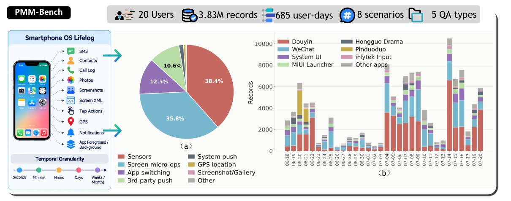
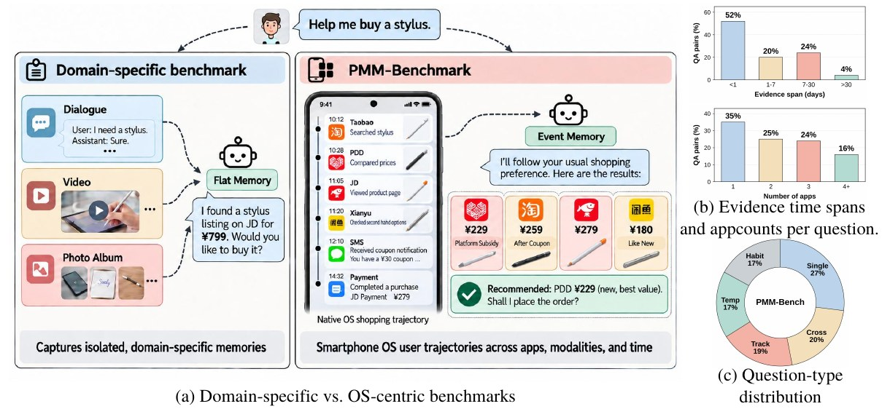
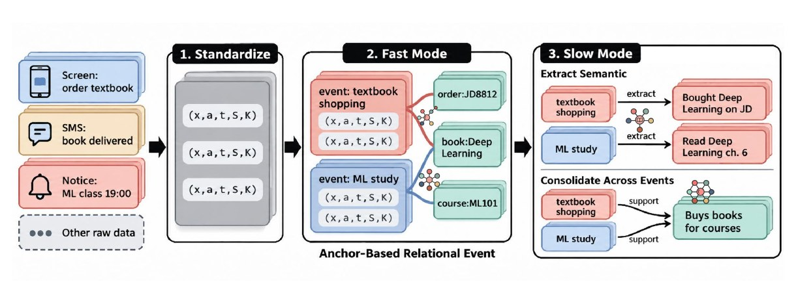

Fragment integration
Screens, images, audio and system records are scattered across apps and modalities with no shared structure.
OS-Centric Personal Memory via Fast–Slow Hierarchical Event Graph
Existing personal memory systems and benchmarks observe one interaction domain, such as dialogue or video. A smartphone OS records the full trajectory: conversations, orders, locations and screens scattered across apps, modalities and time. OS-Memory builds these traces into an evidence-grounded, event-centric hierarchical memory graph, and PMM-Bench evaluates memory systems on this setting.
Screens, images, audio and system records are scattered across apps and modalities with no shared structure.
Several real-world events run at once, and their observations interleave along one timeline.
Which event an observation belongs to often becomes clear only after later evidence arrives.
Real system-level records from consenting Android users. Each participant reviewed the logged traces and confirmed their export. Annotators grouped operations into events across twelve user-need categories and wrote first-person questions, each with a reference answer and linked evidence.


| Benchmark | Source | Natural | Scale | Modality |
|---|---|---|---|---|
| Dialogue | ||||
| LoCoMo | Role-play dialogue | No | 50 conv / 7.5k Q | T |
| LongMemEval | Assistant dialogue | No | 500 Q / 1.5M tok | T |
| Mem-Gallery | Image–text dialogue | No | Multi-session | T, I |
| Digital footprint and file | ||||
| AMA-Bench | Agent traces | Partly | Six domains | T |
| MobileMem | Mobile app traces | Partly | Long-horizon | T |
| MemGUI-Bench | Mobile GUI episodes | No | 128 tasks / 26 apps | I, G |
| FileGramBench | File-system behavior | Partly | 640 traces / 4.6k Q | T, I |
| Lifelog | ||||
| PMM-Bench | Smartphone OS lifelog | Yes | 20 users / 3.83M rec | T, I, G, L, S |
Modalities: T text, I image, G interface actions, L location, S sensor. The raw records contain personal information. PMM-Bench is released in de-identified form under a research-only access agreement.
An observation must be processed when it arrives, yet its event, the event's boundary and its place in the hierarchy often settle only later. OS-Memory splits construction into three stages.

Device records become uniform observations (x, a, t, S, K): text, host app, time, strong identifiers and contextual keys. Screens are transcribed by a vision-language model.
Dual-Rate Evidence-Deferred attribution keeps parallel events in one online pass, matches by identifier first, defers uncertain observations and runs without a generative LLM.
Split, Anchor, Ground, Extract. An LLM splits mixed events, writes summaries and topic anchors, extracts grounded facts and consolidates long-term memory across events.
| Layer | Written by | Written from | Support |
|---|---|---|---|
| Event | DRED | Observations attributed online | Its observations |
| Fact | SAGE, ExtractFacts | A single event | A subset of that event's observations |
| Long-term memory | SAGE, consolidation | Events of an anchor neighbourhood | A set of events |
Accuracy on PMM-Bench. Response model GPT-4.1-mini, judge GPT-4o. Judge is the unweighted mean of the five per-type scores.
| Method | Single | Cross | Temp | Track | Habit | Judge | F1 |
|---|---|---|---|---|---|---|---|
| References | |||||||
| Long context (128K) | 22.8 | 4.2 | 7.6 | 5.9 | 10.0 | 10.1 | 8.7 |
| Flat dense retrieval | 43.6 | 14.8 | 19.2 | 16.5 | 19.7 | 22.8 | 19.9 |
| Compact-entry memory | |||||||
| SimpleMem | 42.3 | 25.4 | 28.2 | 26.8 | 29.6 | 30.5 | 27.1 |
| LightMem | 38.7 | 22.6 | 25.9 | 24.3 | 27.2 | 27.7 | 24.4 |
| Mem0 | 40.2 | 18.9 | 22.4 | 19.6 | 24.8 | 25.2 | 22.3 |
| Relational memory | |||||||
| A-Mem | 41.5 | 26.9 | 29.4 | 28.6 | 30.8 | 31.4 | 27.9 |
| StructMem | 40.9 | 23.8 | 27.6 | 25.1 | 27.9 | 29.1 | 25.8 |
| CompassMem | 43.1 | 30.2 | 34.8 | 33.5 | 32.1 | 34.7 | 30.9 |
| CompassMem + identifier index | 43.4 | 35.6 | 35.4 | 35.9 | 32.8 | 36.6 | 32.6 |
| OS-Memory | 48.2 | 43.5 | 41.1 | 42.8 | 40.6 | 43.2 | 38.4 |
Replacing each system's own segmentation with DRED, and changing nothing else, raises the overall Judge score.
On one participant's full stream, DRED groups 157,684 observations into 25,853 events covering 95.3% of observations; 26.2% of events combine evidence from several apps.
The repository will hold the OS-Memory package, the PMM-Bench evaluation toolkit with adapters for every baseline above, and a synthetic sample user for a quick start. Access to the de-identified PMM-Bench data is granted on request for research use.